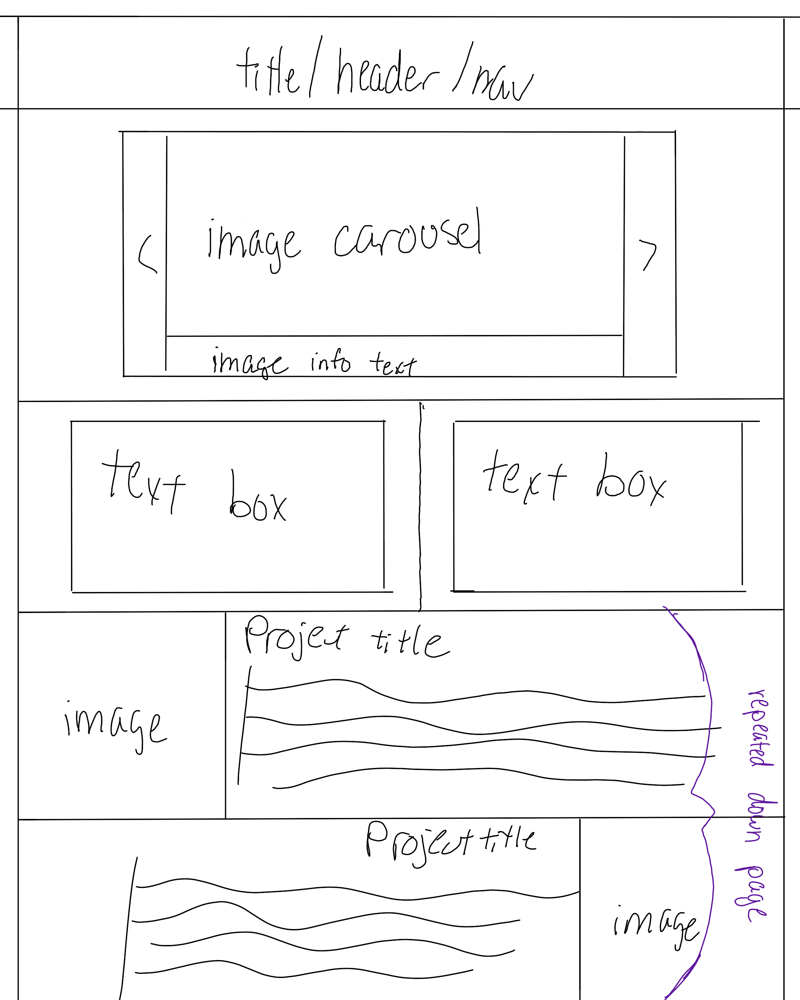

It's fairly finicky with page width and looking good, it's about as opposite of 'responsive' that you can get. The orange and gray boxes on the middle right are the best things to base page width off of.

Sketch of planned grid layout of the matching spec for phase 1
Sketch of planned layout for mobile view of site
Sketch of planned layout for web view of site
For both views of the portfolio sketches, clicking on a specific project from the carousel will scroll down to the project in the longer list.
The carousel was definitely the most challenging part, but I was expecting it to be so it wasn't surprising. I was able to find a site with a couple samples of how to do a CSS carousel that was useful, but adapting that to fit what I already had was a challenge. Some of the things I had planned to do ended up being to difficult and I changed it slightly, such as the sample description showing with the hover, or better external navigation. Some of that was just time crunch, and I plan to work on this more to use as my actual portfolio. The responsiveness also isn't what I want it to be, but it's an attempt.
This was a very useful reference when creating the carousel, specifically the first one on the page
{kind=link}